🛸 Salty's Analog & Digital Collages 🛸
⏳ Gallery Upload In-Progress... ⏳
I love making collages; they have been my favorite way to express myself for many years. I have not scanned most of the collages I've made and, unfortunately, the majority of the ones that I made between 2015-2020 were in a portfolio that was lost in the mail and never found. The ones I do have left from that era, as well as my newer works, can be found below. Please note that these are only preview-sized images below in order to save on bandwidth consumption. If you want to see the full-sized version, you may click the title of any gallery item and it will open the HQ image in a new browser tab.
Labor & Profit
January 2023 /// Apparently I felt extra angry at capitalism when I made this one. All of the statistics about wealth inequality within the artwork were sourced from the Institute for Policy Studies, the United States Census, Forbes, and the Pew Research Center.
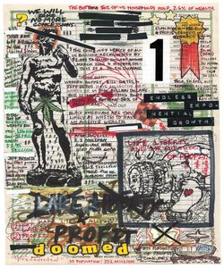GOLD STAR
January 2024 /// This is a collage that I made by scanning a bunch of ~1960s ephemera lying around my house onto my computer and stitching it together using Photoshop, then I slapped an old picture of me on top of it all. I made it to accompany my current musical project's first EP.
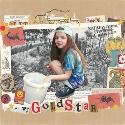Woman of the Year
June 2022 /// I made this collage by making photocopies of some images from a 1960s Playboy magazine and this really cool, old "Woman of the Year" button we found at a thrift store. I also used a few stamps and miscellaneous scraps of paper in my wife and I's craft pile. I just love women!
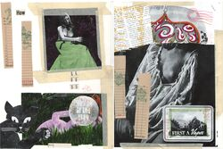Who ever heard of the great beast?
August 2021 /// This is a digital collage I made to accompany a deep house song I made a couple years ago. I mainly used assets sourced from my favorite online archive, OneLetterWords. Craig uploads the most interesting materials and categorizes them in such a pleasing way!
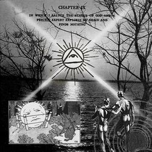The Cowboy Corral
September 2021 /// I made this collage using a shitty black & white copier and some masking tape at one of my old jobs. I made a bunch of copies and gave them to all of my friends. It's simple but one of my favorites. Who doesn't love the gay cowboy aesthetic?
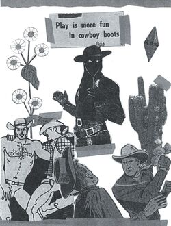Women want me, fish fear me.
August 2021 /// This is a quick collage I threw together at a local art museum's creative space. They had a bunch of prints of various artworks in the museum that you could cut up and glue onto a notecard. The woman with the fish has always been one of my favorite paintings at this particular museum, so I was really excited that it was one of the options.
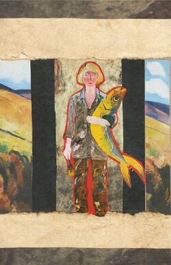Cover the Earth
August 2021 /// I made this (extremely uplifting) collage during a workshop that my girlfriend and I attended. The artist who ran the workshop, Tay Butler, is an incredibly talented artist. I would highly recommend checking out his works, especially his video collages.
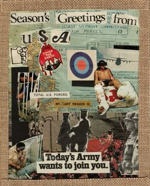Sheer Delight!
June 2021 /// This is my favorite collage that I've ever made. It's pretty big (3 letter-sized pages taped together) and is an "interpret it how you would like" statement on the church and lesbianism. I cut all the images out of old magazines from the '50s and '60s.
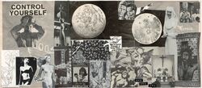Untitled
December 2019 /// I recently found this in one of my old work notepads. I don't like to go too insane with every collage that I make, so I like that this one is cartoony and more "fun" than some of my other ones.
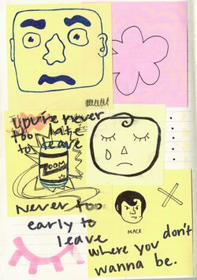Sheer Delight!
January 2019 /// I made this one pretty early on in college when I started to become a bit more radicalized. I remember using my game manual from GTA: San Andreas and a Seventeen magazine for the pictures in this one. Also fuck Steve Jobs.
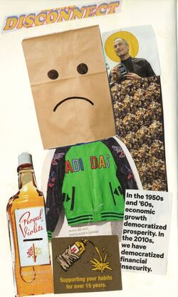The Breakup
September 2018 /// I made this collage after I broke up with my first (and only) boyfriend. I thought I was pretty sly using the ripped up Mac Demarco j-card for this one. I, of course, angrily ripped it up for some reason during the course of our relationship. Thank god I'm a lesbian, but this is pretty funny in hindsight.
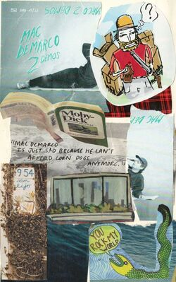Lounging Lady
June 2018 /// I've always loved mid-century design AND women, so this is a perfect early culmination of those interests. Cool colors too! I'm pretty sure I ripped these from a Reader's Digest or something along those lines.
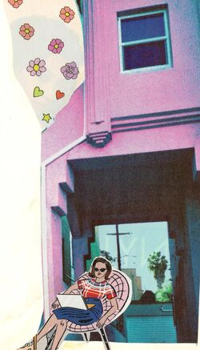Where to?
June 2015 /// I think this is the first collage that I ever finished. I made it as a present for my mom's birthday because she loves Wes Anderson and whimsical shit in general. I think she still has the physical copy stashed away somewhere.
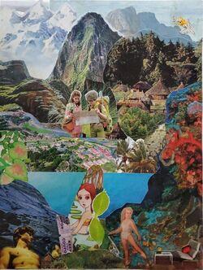